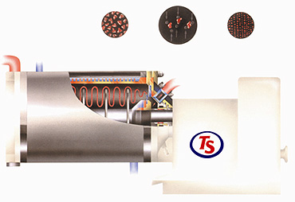

Horizontal sand mill is a horizontal and wet type machine for continuous production of ultra-micro particles with smashing and dispersion. It uses a quantitative pump to transport the pre-stirred raw material into the grinding tank, which is pre-filled with a proper amount of grinding media (such as Zirconia beads). Through the high speed rotation of dispersed blades, the grinding media accumulates enough momentum to create a shearing force through its collision with the particles of raw material, and therefore the goal of raw material dispersion is achieved.
The ball mill has been the mainstream dispersion machine in tradition. In 1952, DuPont in US invented the vertical sand mill to improve the low efficiency of traditional ball mill. Until 1966, in order to overcome the weaknesses of the vertical sand mill, such as difficulty in changing materials, difficulty in starting the machine due to the bottom deposits of grinding beads and raw materials caused by gravity while the machine not in use, and easiness in crushing the grinding beads, European scientists developed the horizontal sand mill.
|
 |
The horizontal sand mill eliminates the disadvantages listed above. It operates with high efficiency.
Moreover, it’s not affected by gravity due to its shorter torque, and it also saves energy and consumables.
In addition, the size of grinding media can be smaller for a better dispersion. For precision ceramics,
the granularity can reach 0.1~0.5μm. |
| |
| |
|